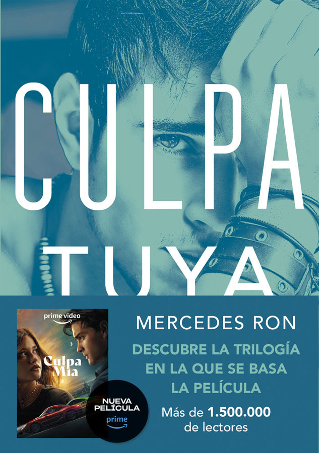

Reseña de la Trilogía Culpables – Mercedes Ron
Libros: Culpa mía, Culpa tuya, Culpa nuestra
Autora: Mercedes Ron
Género: Romance juvenil, drama, new adult
Introducción
La trilogía Culpables, compuesta por Culpa mía, Culpa tuya y Culpa nuestra, es una de las sagas más populares dentro del género de romance juvenil y new adult en los últimos años. Escrita por la autora argentina-española Mercedes Ron, esta historia ha conquistado a miles de lectores por su estilo directo, su carga emocional intensa y la forma en que aborda los conflictos familiares, los amores prohibidos y las relaciones tóxicas con una narrativa adictiva y provocadora.
La saga sigue la historia de Noah y Nick, dos adolescentes de mundos muy distintos que se ven obligados a convivir cuando sus padres se casan. Lo que comienza como una relación marcada por la tensión y el rechazo pronto se convierte en una atracción peligrosa y difícil de controlar. A partir de ese momento, la trilogía explora los límites del amor, la rebeldía adolescente y las decisiones que marcan el paso hacia la madurez.
Más allá del romance, Mercedes Ron toca temas como la identidad, la libertad, el dolor emocional, la lealtad y las segundas oportunidades, todo enmarcado en un universo juvenil cargado de intensidad y dramatismo. Esta mezcla de elementos ha convertido a Culpables en un fenómeno en redes sociales y plataformas digitales, atrayendo tanto a lectores jóvenes como a quienes buscan historias cargadas de emociones fuertes y giros inesperados.
Culpa mía – El origen de un amor complicado
En Culpa mía, el primer libro de la trilogía, Mercedes Ron construye con maestría el escenario donde nace una historia de amor llena de contradicciones y conflictos. Noah, una joven fuerte, independiente y con un pasado marcado por la pérdida y la lucha personal, se traslada a vivir a la lujosa mansión de su nuevo padrastro. Allí conoce a Nick, su hermanastro, un chico atractivo, enigmático y con una personalidad intensa que choca con la de Noah desde el primer momento.
La tensión entre ellos no solo es física, sino también emocional y social. La atracción que sienten está cargada de tabúes y de un juego de poder que se desarrolla en cada encuentro. El amor prohibido, uno de los grandes motores de la novela, se entrelaza con la rebeldía juvenil y el deseo de romper con las expectativas sociales y familiares. A través de esta relación compleja, el libro explora temas como los prejuicios, la búsqueda de identidad y la necesidad de independencia frente a las imposiciones externas.
La narrativa de Mercedes Ron es ágil y fluida, logrando que el lector se sumerja en la mente y el corazón de los protagonistas, sintiendo su confusión, pasión y vulnerabilidad. El ritmo del libro mantiene el suspenso y la emoción constante, alternando momentos de ternura con otros de conflicto intenso, lo que hace que la lectura sea verdaderamente adictiva desde la primera página. Además, la autora no teme abordar aspectos oscuros y complicados de las relaciones adolescentes, mostrando que el camino hacia el amor y la madurez está lleno de obstáculos y decisiones difíciles.
Más informaciónCulpa tuya – Más allá del enamoramiento
En Culpa tuya, la segunda entrega de la trilogía, la historia de Noah y Nick se vuelve mucho más profunda y compleja. La relación que comenzó con una fuerte atracción y tensión en Culpa mía ahora enfrenta pruebas mucho más duras, poniendo a prueba no solo el amor, sino también la confianza y la resiliencia de ambos protagonistas.
Mercedes Ron explora en este libro las sombras del pasado de Nick, revelando secretos y heridas que afectan directamente la estabilidad emocional de la pareja. Las inseguridades y los celos se convierten en protagonistas, intensificando el drama y el conflicto interno de los personajes. El peso de las decisiones pasadas y las cargas familiares empiezan a hacer mella, generando un ambiente tenso y lleno de incertidumbre.
Este volumen es, sin duda, el más dramático y emotivo de la trilogía, ya que no solo profundiza en el enamoramiento juvenil, sino que también muestra el lado más oscuro y vulnerable de las relaciones. Mercedes Ron logra un equilibrio entre la intensidad romántica y los conflictos personales, lo que enriquece la narrativa y la hace más madura. Además, su evolución como escritora se nota en la construcción de los personajes y en la complejidad de la trama, que atrapa al lector con giros inesperados y momentos de gran impacto emocional.
En Culpa tuya, el amor se convierte en un reto constante que obliga a Noah y Nick a enfrentarse no solo a sus sentimientos, sino también a sus propios demonios internos, preparando el terreno para un desenlace que promete ser decisivo.
Más informaciónCulpa nuestra – La madurez del amor
En Culpa nuestra, el tercer y último libro de la trilogía, Mercedes Ron lleva a sus protagonistas, Noah y Nick, a un punto decisivo en su historia. Después de todo el drama, las luchas internas y las pruebas emocionales que han enfrentado, ambos personajes deben tomar decisiones cruciales que definirán no solo su relación, sino también su crecimiento personal. Este cierre destaca por su tono más reflexivo y maduro, donde el romance deja espacio para temas profundos como el perdón, la aceptación y la reconstrucción emocional. Noah y Nick no solo luchan por su amor, sino también por encontrar un equilibrio entre sus heridas del pasado y la posibilidad de un futuro juntos. La autora se aleja un poco del dramatismo intenso para explorar la evolución de sus personajes desde una perspectiva más serena y consciente.
Aunque el desenlace puede generar opiniones divididas entre los lectores, es innegable que ofrece un cierre coherente con todo el recorrido emocional que ambos han vivido. Culpa nuestra invita a reflexionar sobre la importancia del amor propio como base para cualquier relación saludable, y muestra que el verdadero crecimiento muchas veces implica aprender a soltar, perdonar y elegir caminos que prioricen el bienestar personal.
En resumen, este último volumen no solo concluye la historia de Noah y Nick, sino que también ofrece un mensaje esperanzador sobre la madurez emocional y la capacidad de reinventarse tras las adversidades.
Más informaciónValoración personal
Mercedes Ron logra conectar con el público juvenil con una prosa sencilla, directa y cargada de emociones. Aunque algunos clichés del género están presentes, la fuerza de los personajes y la intensidad de sus relaciones hacen que la trilogía se lea casi de un tirón. Es una lectura recomendada para quienes disfrutan de romances dramáticos y personajes con pasados turbulentos. Además, es un ejemplo claro de cómo la literatura Wattpad puede evolucionar hacia el mercado editorial con gran impacto.
Calificación general: ★★★★☆ (4/5)
- Lo mejor: La evolución emocional de los protagonistas y la intensidad de la historia.
- Lo mejorable: Algunos comportamientos tóxicos que merecen ser leídos con una mirada crítica.
- Recomendado para: Jóvenes adultos, lectores de romance con tintes oscuros, fans del drama emocional.